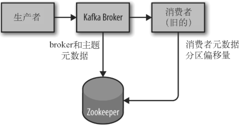

第二章、安装Kafka
2.1、准备
依赖Java、ZooKeeper。
2.1.3、安装ZooKeeper
Kafka 使用 ZooKeeper 保存集群的元数据信息和消费者信息。Kafka 发行版自带了 ZooKeeper，也可以使用独立的完整版的ZooKeeper服务。

2.2、安装 Kafka Broker
2.3、broker 配置
2.3.1、常规配置
broker.id：broker的标识符，默认值为 0，在Kafka集群中必须是唯一的。port：监听的端口zookeeper.connect：保存 broker 元数据的 ZooKeeper 地址。该配置参数使用分号分隔的hostname:port/path列表：hostname：ZooKeeper服务器的主机名或IP地址port：ZooKeeper的客户端连接端口/path：可选的ZooKeeper 路径，作为 Kafka 集群的 chroot 环境。如果不指定，默认使用根路径如果指定的路径不存在，broker会在启动的时候创建。
log.dirs：Kafka 把所有的消息都保存在磁盘上，存放这些日志片段的目录是通过log.dirs指定的。是一组逗号分隔得本地文件系统路径。
2.3.2、主题的默认配置
Kafka 为创建的主题提供了很多默认配置参数。可以通过管理工具为每个主题单独配置一部分参数，比如分区个数和数据保留策略。服务器提供的默认配置则作为基准，用于大部分主题。
num.partitions：新创建主题的分区数，默认1。如果启动了主题自动创建功能（默认启用），主题分区数就是该参数指定的值。可以增加主题分区的个数，但不能减少分区的个数。Kafka 集群通过分区对主题进行横向扩展，所以，当有新的 broker 加入集群时，可以通过分区个数来实现集群的负载均衡。
如果消息按照不同的键来写入分区，那么为已有主题新增分区就会很困难。
单个broker 对分区个数是有限制的，分区越多，占用的内存越多，完成首领选举需要的时间也越长。
log.retention.ms：Kafka 通常根据时间来决定数据可以保留多久。默认使用log.retention.hours，默认值168小时，即一周。还有参数log.retention.minutes和log.retention.ms，它们三个作用一样，如果指定了它们中的不止一个，Kafka会优先使用其中的最小值。log.retention.bytes：每个分区可以保留的消息的字节数。分区的数据量和保留时间，满足任何一个条件时，分区中的消息就会被删除。
log.segment.bytes：日志片段数据量最大值（默认1GB）。当日志片段达到这个最大值时，会被关闭，一个新的日志片段会被打开。日志片段关闭，就开始等待过期。该参数越小，就会越频繁地关闭和分配新文件，从而降低磁盘写入的整体效率。log.segment.ms：关闭日志片段的时间。类似于分区消息的删除，日志片段数据量、日志片段时间，达到任何一个条件，就会关闭日志片段。
message.max.bytes：单个消息的大小限制，默认1000000，即1MB。如果生产者尝试发送的消息超过这个大小，消息不会被接收，还会收到 broker 返回的错误信息。与其他与字节相关的配置参数一样，该参数指的是压缩后的消息大小，只要压缩后的消息小于
message.max.bytes指定的值，消息的实际大小可以远大于这个值。这个值对性能有显著的影响。值越大，负责处理网络连接和请求的线程就需要花越多的时间来处理这些请求。它还会增加磁盘写入块的大小，从而影响 IO 吞吐量。
消费者客户端设置的
fetch.message.max.bytes必须与服务器端设置的消息大小进行协调。如果这个值比message.max.bytes小，那么消费者就无法读取比较大的消息，导致出现消费者被阻塞的情况。在为集群里的 broker 配置replica.fetch.max.bytes参数时，也遵循同样的原则。
2.7、生产环境注意事项
2.7.3、共享 ZooKeeper
Kafka 使用 ZooKeeper 保存 broker、主题和分区的元数据信息。对于一个包含多个节点的 ZooKeeper 群组（Ensemble）来说，Kafka 集群的流量并不算多，那些操作只是用于构造消费者群组或集群本身。实际上，很多部署环境中，会使用多个 Kafka 集群共享一个 ZooKeeper 群组（每个集群使用一个 chroot 路径）。
虽然多个 Kafka 集群可以共享一个 Zookeeper 群组，但不建议把 Zookeeper 共享给其他应用程序。Kafka 对 Zookeeper 的延迟和超时比较敏感，与 Zookeeper 群组之间的一个通信异常就可能导致 Kafka 服务器出现无法预测的行为。这样很容易让多个 broker 同时离线，如果它们与 Zookeeper 之间断开连接，也会导致分区离线。这也会给集群控制器带来压力，在服务器离线一段时间之后，当控制器尝试关闭一个服务器时，会表现出一些细小的错误。其它应用程序可能会因为重度使用或者不恰当操作给 ZooKeeper 群组造成压力。